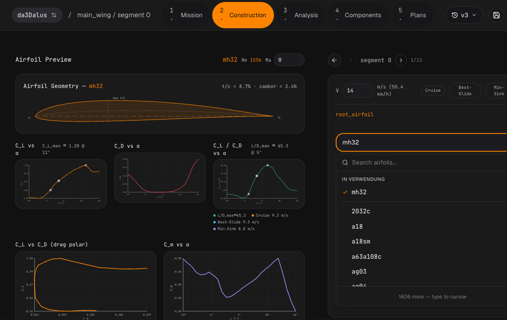
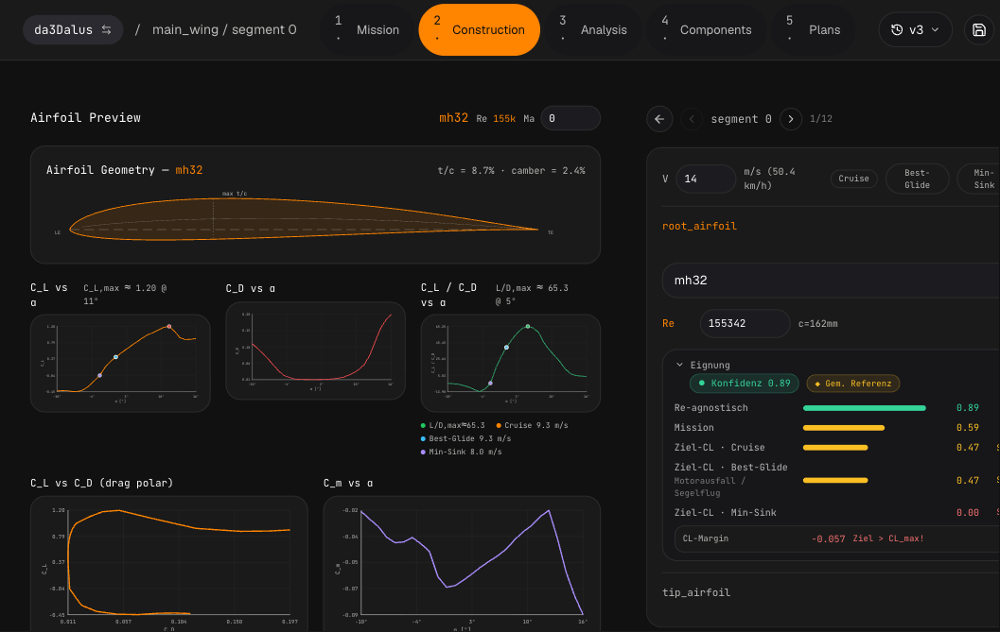
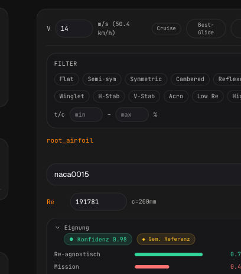
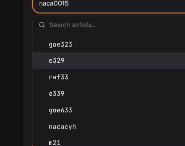
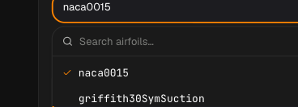
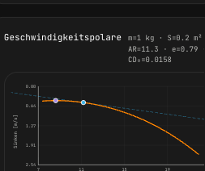
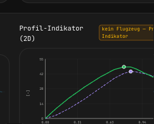
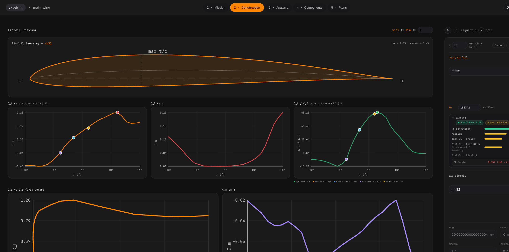

Übersicht — was in dieser Kampagne umgesetzt wurde
Autonom vom Team (Architekt · Backend/Frontend-Dev · Reviewer · QM · Domänen-Experten · 4 Kunden-Personas) bis zum Merge.
Neue Tickets — alle gemergt
| # | Feature | PR |
|---|---|---|
| 838 / 839 | Ziel-CL am eigenen Betriebs-Re (Bug) + Speed-Buttons + Diagramm-Marker | #842 ✅ |
| 837 | „In Verwendung"-Bereich im Airfoil-Picker | #843 ✅ |
| 835 | Multi-Tag-Filter (Familie / Rollen-Tags / Dicke) — Query-Zeit | #844 ✅ |
| 841 | Geschwindigkeitspolare (Flugzeug) + 2D-Profil-Proxy | #845 ✅ |
| 840 | As-built Welt-Anstellwinkel je Flügelschnitt (LiftingLine) | #846 ✅ |
Qualitätssicherung pro Ticket
- TDD (Test-first), Lane-Purity-Gate, unabhängiger QM-Re-Run (kein Vertrauen in Self-Reports).
- 4 Kunden-Personas (RC-Trainer-Anfänger · FPV/Sport-Racer · Segler/Nuri-Bauer · Profi-UAV) smoke-testen live; Fachexperten bewerten die Physik.
- CI-gated Merge (SonarCloud: ≥80 % New-Coverage, ≤3 % Duplikation); Self-Healing bei transienten Infra-Fehlern.
- Bei #840 fanden die Gates 3 echte Bugs nacheinander (UUID-500 → Tip-Singularität → Coverage) — jeder gefixt, bevor gemergt wurde.
Airfoil-Eignung — Low-Re Profilbewertung umgesetzt
Im /workbench/airfoil-preview. Für ~1640 Profile vorberechnet (NeuralFoil, Re-Grid 40k–750k). Bewertet, ob ein Profil bei deinen echten RC/UAV-Flugbedingungen taugt.
Drei Bewertungs-Lesarten + Betriebspunkte
Re-agnostisch (allgemeine Low-Re-Güte) · Mission-gewichtet · Ziel-CL an drei Betriebspunkten: Cruise / Best-Glide / Min-Sink — jeweils am eigenen Betriebs-Re bewertet (Bug #838: vorher hing es am UI-Slider). Speed-Buttons übernehmen die Design-Geschwindigkeiten; wichtige Punkte sind in den Diagrammen markiert.
„In Verwendung"-Picker
Bereits im Modell genutzte Profile stehen oben im Dropdown — kein erneutes Suchen.


Multi-Tag-Filter
Filter nach Familie (flat_bottom / semi_symmetric / symmetric / cambered / reflexed), Rollen-Tags (v-stab / h-stab / acro / winglet / low_re) und Dicke. Tags werden zur Query-Zeit aus den Metriken berechnet. Nuri-Fall: Filter reflexed liefert die MH-/EH-/E18x-Serie.



Geschwindigkeitspolare + 2D-Proxy
Echte Flugzeug-Speed-Polare (Sinkrate vs. Fluggeschwindigkeit) mit Best-Glide (Ursprungs-Tangente) und Min-Sink (Tiefpunkt). Dazu ein 2D-Profil-Indikator (cl¹·⁵/cd, cl/cd), klar als Sektions-Größe gekennzeichnet — nicht als Flugzeug-Polare.


As-built Welt-Anstellwinkel
Je Flügelschnitt der real installierte Anstellwinkel aus der Konstruktion (Einstellwinkel + Schränkung + Trimm − induzierter Winkel) via asb.LiftingLine. Als goldener „As-built"-Marker in den Diagrammen — Washout sichtbar (Tip steht flacher an). Inline berechnet.


Auslegung des Antriebsstrangs vorhanden
Elektrische Antriebsstrang-Auslegung — Motor + ESC + Akku.
Powertrain-Sizing
Katalog-Sweep über COTS-Komponenten (Motor/ESC/Akku) zu den Missionsanforderungen; rankt Kombinationen mit Stromaufnahme- und RPM-Checks (COTS-Picker-Dialog).
Endurance & Reichweite
Elektrische Flugdauer/Reichweite aus Energiebilanz (Akku-Wh, Wirkungsgrade Motor/Prop/ESC, Masse, Polare).
Mission & Compliance vorhanden
Route /workbench/mission.
Missionsziele + 7-Achsen-Compliance-Radar
Mission-Typ (Trainer/Sport/Kunstflug/Segler/Flying-Wing) + Zielwerte; Compliance-Radar (Speed, Stall-Sicherheit, Manövrierbarkeit, Gleiten, Steigen, Flächenbelastung, Feldlänge) automatisch aus Assumptions + Aero.
Analyse — Aero & Stabilität vorhanden
Route /workbench/analysis.
Polaren · Stabilität · Operating-Points · Trefftz · Streamlines · V-n-Envelope · Sizing
- Aerodynamik via AeroBuildup/AVL; Re-indexierte Polaren-Tabelle; Operating-Point-Generator (Takeoff/Cruise/Landing) mit Trim.
- Matching-Chart (T/W vs W/S) mit ziehbarem Designpunkt; V-n-Flugenvelope; Feldlängen (TO/LDG); Tail-Sizing; Loading-Scenarios + CG-Envelope.
- Design-Assumptions mit ESTIMATED/CALCULATED-Toggle; Recompute bei Geometrieänderung.
Bug #788 (kritisch, in Arbeit): ASB-Referenzfläche kam aus dem ersten statt dem Hauptflügel → bei tail-first-Importen ~8× falsche Koeffizienten. Fix: Referenz = größter Flügel.
Konstruktion & CAD vorhanden
Route /workbench.
Wing/Fuselage-Editor + 3D-Vorschau
Querschnitte, Chord, Twist, Sweep, Profilfamilien, Holme, Steuerflächen; 3D-Plotly-Wireframe mit Stabilitäts-Overlay (NP/CG). STEP/STL/Tessellation-Export.
Komponenten & Pläne vorhanden
Routen /workbench/components, /workbench/construction-plans.
Komponenten-Bibliothek + Construction-Parts
Globaler Katalog (Motoren/Akkus/ESC/Servos/Material/Props) + flugzeugspezifische Zuweisung im Parts-Baum.
Construction-Plans (CAD-Automation)
Baumbasierte Creator-Schritte (z. B. WingCreator → FuselageCreator → ExportToSTEP), als Templates speicher-/instanziierbar; Ausführung erzeugt STEP/STL.